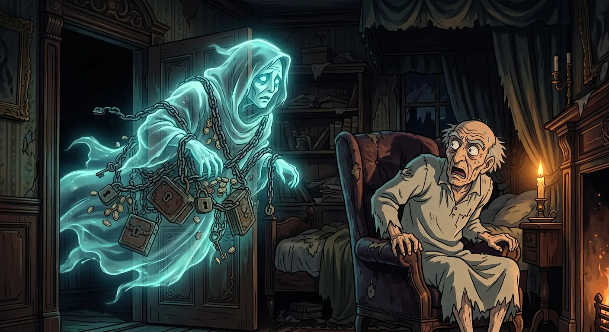
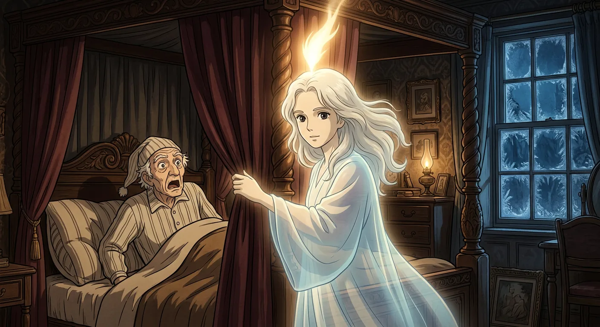
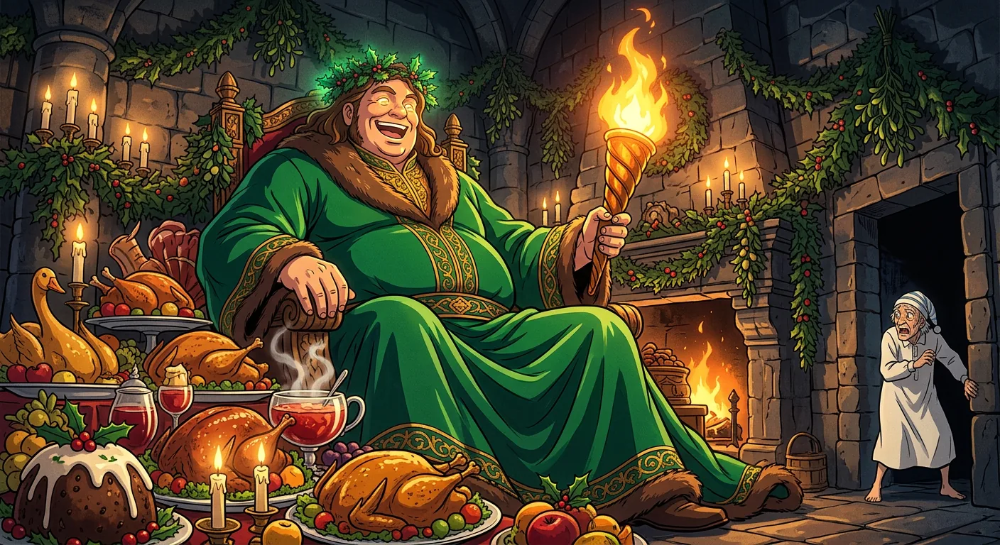
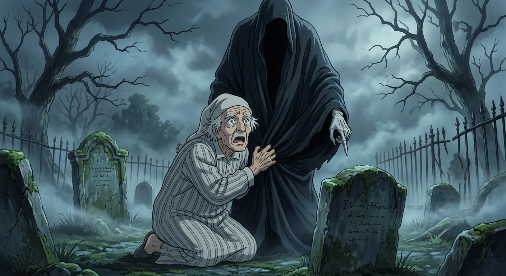
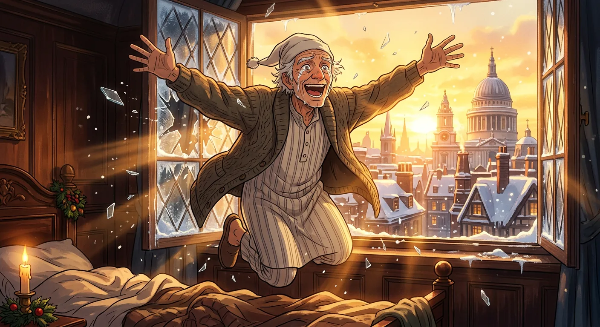

A Dead Partner and a Frozen Soul
Marley was Scrooge's old friend, but Marley had died. This is important to know because something amazing is about to happen. Scrooge was a very grumpy old man who loved money more than anything else. He was cold inside, like winter had frozen his heart. He never smiled, and he did not like Christmas one bit. On Christmas Eve, Scrooge sat in his chilly office counting coins. His kind helper Bob Cratchit tried to stay warm nearby. Scrooge's cheerful nephew Fred came to invite him to dinner, but Scrooge just said "Bah! Humbug!" and sent him away.
That night, something strange happened in Scrooge's dark old house. He saw Marley's face appear on his door knocker, looking pale and ghostly. Then Marley's ghost floated right through the door, wrapped in heavy chains. The ghost told Scrooge he had a chance to change his grumpy ways. Three special visitors would come to help him, starting when the clock struck one.

The Ghost of Christmas Past Arrives
Scrooge woke up in the dark and felt very confused. The church bells said it was midnight, but that made no sense at all. He remembered what Marley's ghost had told him. A special visitor would come when the clock struck one. So Scrooge waited and waited in his bed. When the bell finally rang, the curtains around his bed flew open. There stood the strangest person Scrooge had ever seen. It looked like a child and an old person at the same time. A bright light glowed from its head like a candle. "I am the Ghost of Christmas Past," it said softly. "Your past." The Spirit took Scrooge flying through the air to places he knew as a boy. Scrooge saw himself as a lonely child reading books at school. He cried a little to see how sad he once was. Then he saw his kind sister Fan, who came to bring him home. He saw his old boss Fezziwig, who threw the most wonderful Christmas parties. These happy memories made Scrooge smile. But he also saw how he had changed and become unkind over the years. When the journey ended, Scrooge was back in his own bed, feeling very tired and full of big feelings.

A Feast of Light and Plenty
Scrooge woke up in his bed feeling a bit scared. He was waiting for another magical visitor to come. Then he saw a bright, warm light glowing from his sitting room. A cheerful voice called his name and told him to come in. The room looked amazing! There was green holly everywhere and piles of yummy holiday food. Sitting on this wonderful pile was a big, friendly giant in a green robe. This was the Ghost of Christmas Present, and he had a glowing torch that sparkled with magic.
The kind Spirit took Scrooge flying through the snowy city streets. They saw happy people getting ready for Christmas dinner. Then they visited the home of Bob Cratchit, who worked for Scrooge. Bob's family was poor but very loving and cheerful. They had a small but delicious dinner together. Scrooge met Tiny Tim, a sweet little boy who walked with a crutch. Tim's hopeful smile touched Scrooge's heart deeply. The Spirit showed Scrooge many more people sharing Christmas joy. Scrooge's heart began feeling warmer and lighter inside.

The Silent Shadow of Things to Come
A new ghost came to visit Scrooge. This Spirit was very quiet and dressed all in black. It did not say a single word. Scrooge felt a little scared, but he wanted to learn and become a better person. So he followed the silent Spirit into the city.
They saw people talking about someone who had passed away. Nobody seemed sad about it at all. Then Scrooge saw the Cratchit family, and they were crying. Little Tiny Tim was gone, and everyone missed him so much. Bob Cratchit talked about how Scrooge's kind nephew had offered to help their family. Even though the Cratchits were sad, they held each other close with so much love.
Finally, the Spirit showed Scrooge a gravestone with his own name on it. Scrooge promised he would change and be good and kind forever. He held onto the Spirit's robe, and suddenly he was back in his own bedroom. Morning light was coming through the window.

A New Life Begins in Joy
Scrooge woke up in his own cozy bed feeling so happy! He laughed and cried at the same time because he felt so light and free. He jumped out of bed and danced around his room like a giddy schoolboy. Everything felt new and wonderful to him now.
He heard the church bells ringing for Christmas morning. A boy outside told him it was Christmas Day. Scrooge asked the boy to buy the biggest turkey in the shop and send it to Bob Cratchit's family as a surprise gift. Then Scrooge got dressed in his best clothes and walked through the snowy streets. He smiled at everyone and wished them a merry Christmas. He gave money to people who needed help. He even went to his nephew Fred's house for Christmas dinner. Fred was so happy to see him that he gave Scrooge the biggest welcome ever. The next day, Scrooge gave Bob more money and promised to help his whole family. He became like a second father to Tiny Tim, who grew up strong and healthy. Scrooge had learned how to keep Christmas in his heart forever.